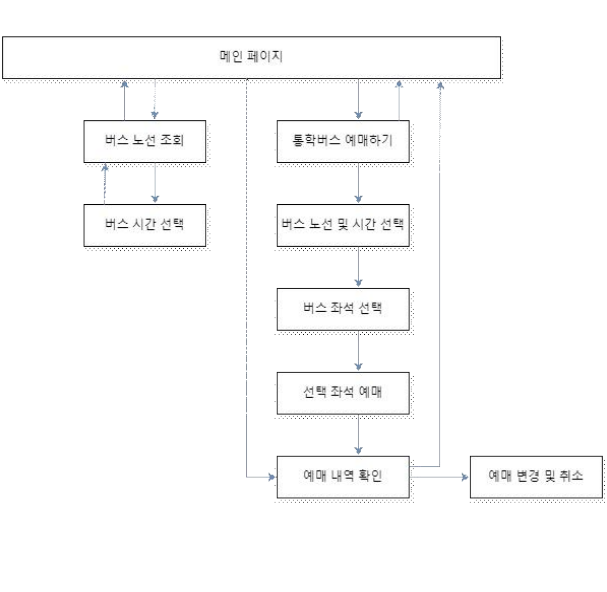
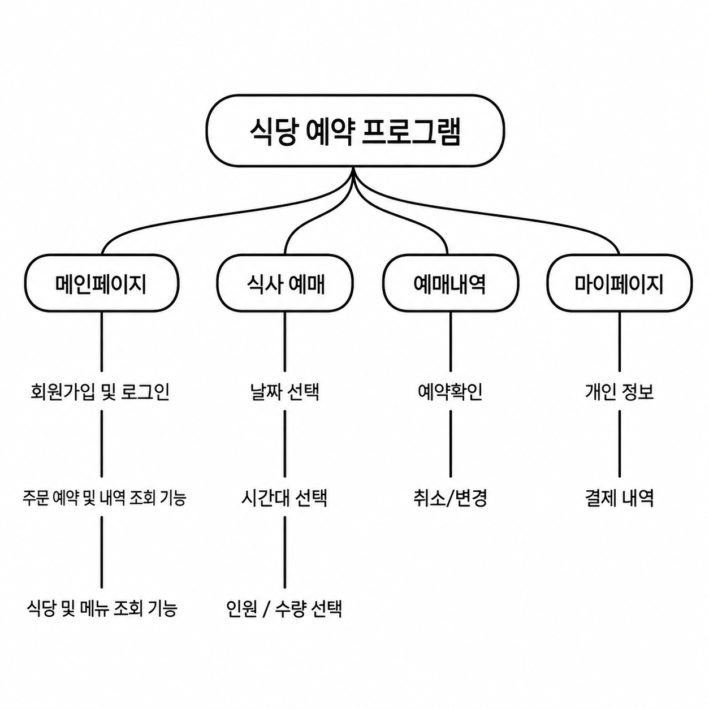

나의 장점
목표에 따라 우선순위를 정하고, 작은 부분까지 꼼꼼하게 확인하며 일을 진행합니다.
목표에 따라 우선순위를 정하고, 작은 부분까지 꼼꼼하게 확인하며 일을 진행합니다.
드라마와 음악을 즐기고, 다이어리를 작성하며 일상을 기록하고 정리하는 것을 좋아합니다.
소프트웨어학 전공을 바탕으로 네트워크, 서버, 시스템 보안 등 IT 인프라를 학습하며, AI 기술을 활용하는 역량을 키워가고 있습니다.
BU-S | 통학버스 예매 시스템
통학버스 예매 시스템을 개발하는 팀 프로젝트를 진행했습니다.
사용자가 버스 노선과 시간을 확인하고, 좌석을 선택하여 예매할 수 있는
웹 서비스를 구현하는 것이 목표였습니다.
프로젝트의 전반적인 프론트엔드 개발을 담당했습니다.
예매 과정에서 필요한 화면을 구현하고 사용자에게 필요한 정보와 기능이
자연스럽게 이어질 수 있도록 화면을 구성했습니다.
또한 기능분해도와 화면설계서 작성, 회의록 정리와 발표용 PPT 제작에도 참여했습니다.
팀원들과 협력하여 통학버스 예매 시스템을 완성했습니다.
프론트엔드 개발을 주도하면서 사용자 화면을 직접 설계하고 구현하는 경험을 쌓았으며,
개발뿐만 아니라 설계, 문서화, 협업, 발표 준비까지 프로젝트의 전반적인 과정을 경험할 수 있었습니다.

통학버스 예매 시스템 기능 흐름도 노선 및 시간 조회부터 좌석 선택, 예매 내역 확인, 변경·취소까지의 서비스 흐름을 구성했습니다.
PIND | YouTube 영상 속 장소를 찾아 지도에서 확인하는 서비스
2025.07.21 – 2025.08.26
PIND 웹사이트에 직접 YouTube 링크를 입력하는 방식뿐만 아니라,
YouTube 영상을 시청하는 중에도 영상 속 장소를 바로 확인할 수 있는
기능이 필요했습니다.
PIND 프로젝트에서 Plasmo를 활용한 브라우저 확장 프로그램 개발을 담당했습니다.
YouTube 화면에서 지도 기능을 실행하면 PIND 웹앱으로 이동하고,
영상에서 추출된 위치를 지도에서 확인할 수 있도록 웹 서비스와 연결했습니다.
개발 과정에서는 Claude CLI를 활용하여 코드 분석과 기능 구현 및 수정 작업을 진행했습니다.
YouTube에서 브라우저 확장 기능을 실행하고,
PIND 웹앱으로 이동하여 분석된 장소를 지도에서 확인하는 흐름을 구현했습니다.
이를 통해 브라우저 확장 프로그램과 웹 서비스를 연결하는 개발 경험을 쌓았으며,
새로운 프레임워크와 AI 개발 도구를 실제 프로젝트에 활용해 볼 수 있었습니다.
테이블톡 | 식당 예약 웹 서비스
주변 식당 정보를 확인하고 간편하게 예약할 수 있는 웹 서비스를 구현하는 프로젝트를 진행했습니다.
식당 선택부터 예약, 예약 내역 확인까지 자연스럽게 이어지는 사용자 흐름을
구성하는 것이 목표였습니다.
식당 목록을 확인할 수 있는 메인 페이지와 로그인 및 회원가입 페이지를 구현했습니다.
식당 예약 페이지와 마이페이지를 구성하고,
사용자가 식당을 선택한 뒤 날짜, 시간, 인원수를 입력하여 예약할 수 있도록 구현했습니다.
마이페이지에서는 예약 정보를 확인하거나 변경 및 취소할 수 있도록 화면과 기능을 구성했습니다.
식당 정보 확인부터 예약, 예약 내역 관리까지 이어지는 웹 서비스의 기본 기능을 구현했습니다.
여러 페이지의 기능을 연결하면서 사용자 흐름을 고려한 웹페이지 설계와
프론트엔드 구현 경험을 쌓을 수 있었습니다.

테이블톡 식당 예약 웹 서비스 기능 구조도 메인페이지, 식사 예약, 예약내역, 마이페이지로 이어지는 주요 기능 구조를 구성했습니다.
누구나 확인할 수 있는 정보입니다.
sumin0516a@naver.com
소프트웨어학 전공 · 졸업
패스키 인증 기능을 연결할 예정입니다.